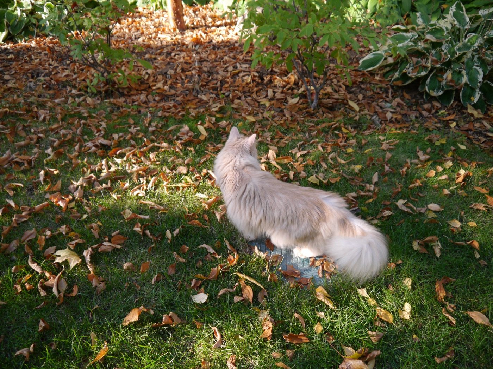
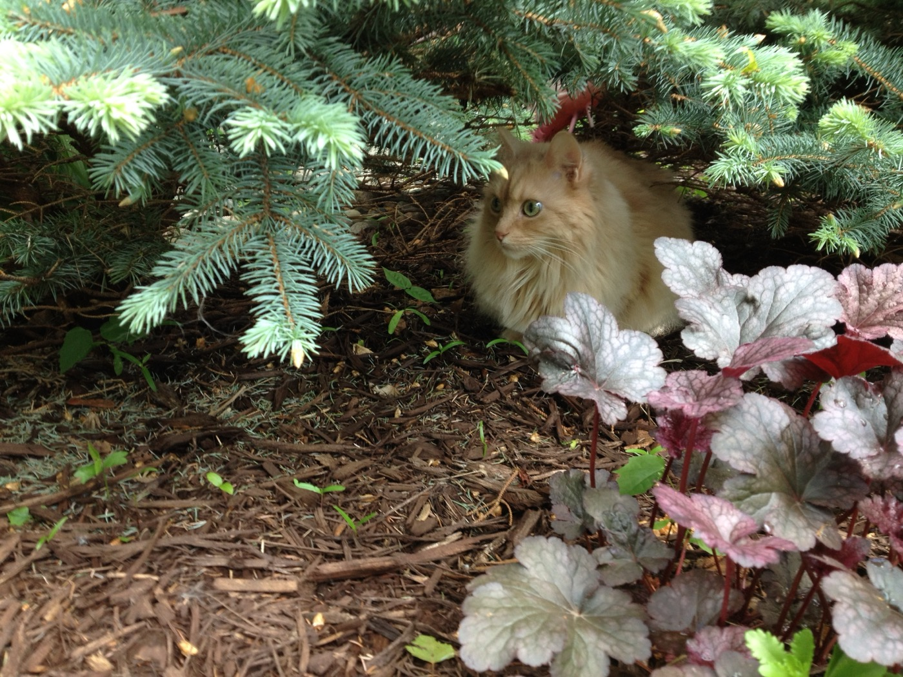
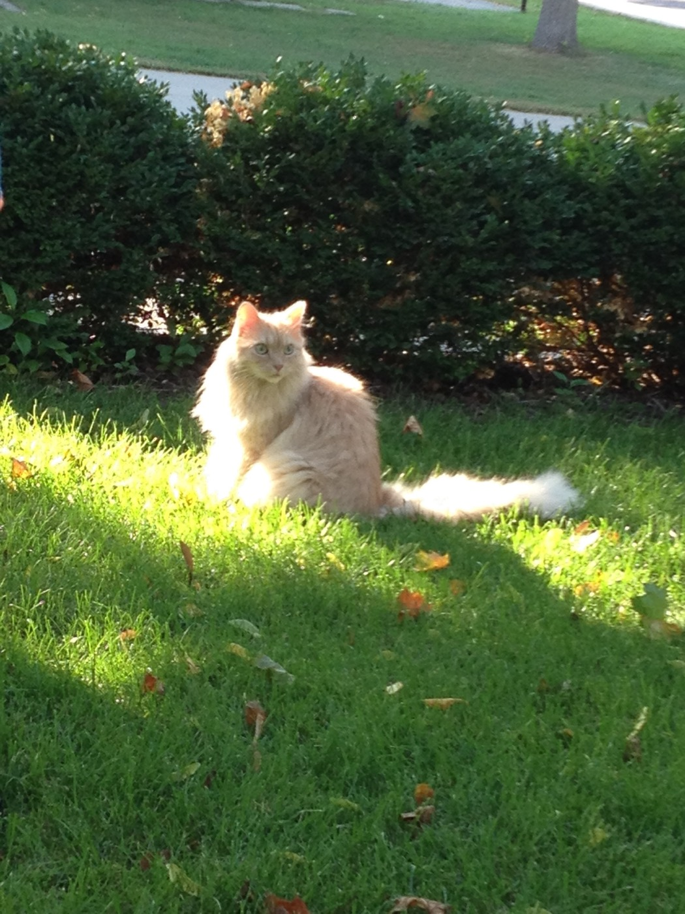
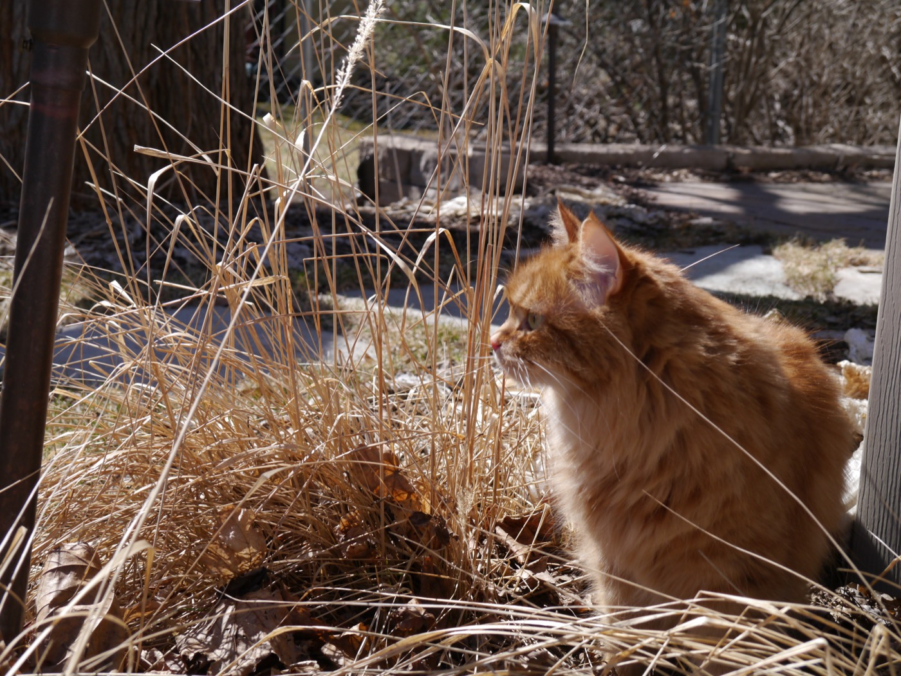

Long before anyone built a catio, outside time happened the original way: in the garden itself, with supervision that was tolerated rather than acknowledged.
The garden, in all its guises
Howl took the garden as he found it, and he found it in every condition it had to offer. In leaf-fall he worked the borders, conducting a full review of the season's deliveries — from, naturally, the one man-made square of metal in the entire lawn.


In summer he preferred the shade program: under the juniper, beside the coral bells, positioned where the whole bed could be monitored without the inconvenience of being seen first.

And on the good evenings he simply sat in the last of the light, out on the open lawn by the hedge, and let the garden come to him.

The considered opinion
Paradox approached the whole business differently. Where Howl ranged, she settled in among the winter grasses and thought — about the yard, about the limestone retaining wall bordering the flower bed, and about whatever it is a cat weighs so carefully in that kind of stillness. Our theory, never disproven, was that she was drafting a formal request for more outside time.

The catio, when it finally arrived, was for the cats who came after. But the case for building it was made by the first cats and their need and desire to experience the outside.